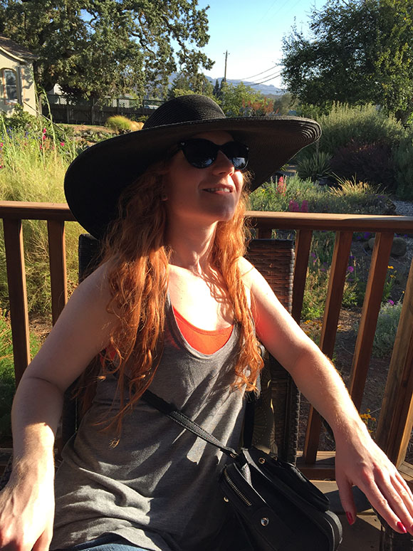

About Me
"Great design requires research, iteration and instinct."
Multi-disciplined designer with 10 years of experience.
Born and raised in Miami, Fl, I recently moved to Austin, TX to start a new adventure. I have been working in the fashion industry as a clothing designer for the past 10 years and decided that I wanted to expand my knowledge and broaden my design skills and career path. Having a passion for human centered design and feeling drawn to have a career that improves people’s lives, I fell in love with UX/UI design.
